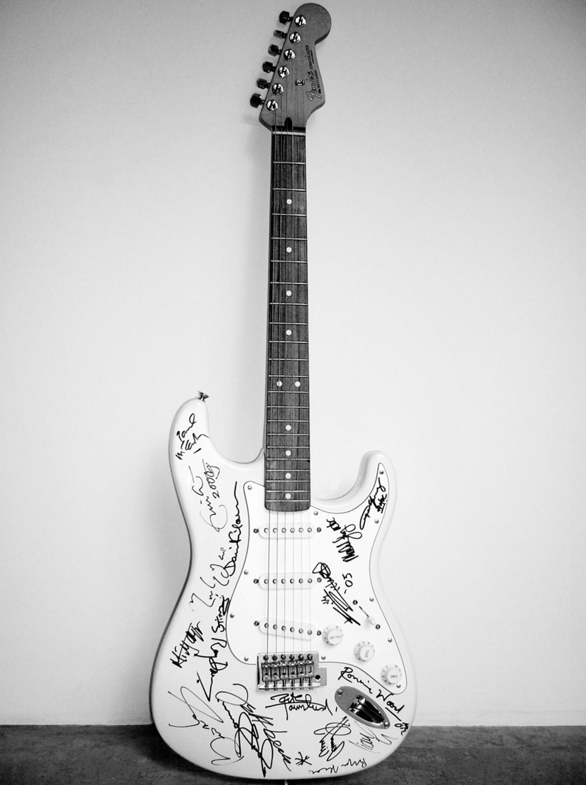

1. Reach Out to Asia Stratocaster - $2'700'000
2005 оны цунамигаас болж хохирсон Азийн орнуудад тусалж хандив босгох зорилгоор энэхүү гитар дээр Eric Clapton, Mick Jagger, Ronnie Wood, Brian May, David Gilmour, Jimmy Page, Jeff Beck, Mark Knopfler, Tony Iommi, Angus Young,Pete Townshend, Malcolm Young, Sting, Ritchie Blackmore, Bryan Adams, Liam Gallagher, and Paul McCartney гэх мэт бүх Гитарын бурхдын гарын үсгийг цуглуулжээ. Энэ нь бараг л 3 сая ам.долларын үнээр зарагдсан бөгөөд байгалийн гамшиг цунамигаас болж хохирсон хохирогчдод зориулж босгосон урлагийханы маш том хандив байсан юм. 2.7 сая ам.доллар = 7'692'300'000 төгрөг